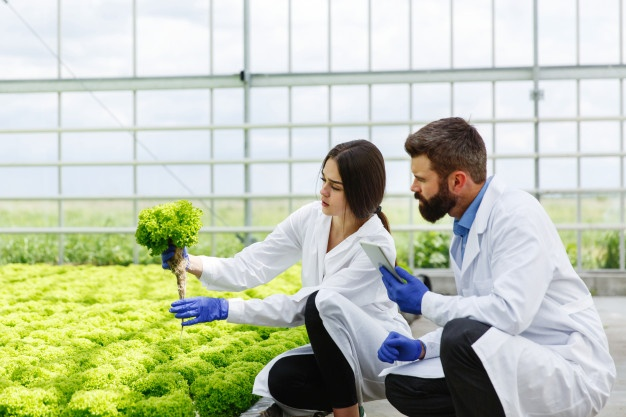

Agroekoteknologi adalah ilmu yang mempelajari teknologi pertanian yang berwawasan lingkungan. Ini mencakup pengelolaan lahan, tanaman, dan sumber daya alam dengan tujuan meningkatkan produktivitas pertanian secara berkelanjutan. Agroekoteknologi menggabungkan prinsip-prinsip ekologi dan teknologi untuk menciptakan sistem pertanian yang efisien, ramah lingkungan, dan ekonomis.

Manfaat Agroekoteknologi:
Peningkatan Produktivitas: Teknologi pertanian yang efisien dapat meningkatkan hasil panen dan kualitas produk pertanian.
Pengurangan Dampak Lingkungan: Teknik yang ramah lingkungan membantu mengurangi emisi gas rumah kaca, polusi, dan kerusakan ekosistem.
Ketahanan Pangan: Dengan mengadopsi praktik pertanian yang berkelanjutan, ketahanan pangan dapat ditingkatkan untuk memenuhi kebutuhan populasi yang terus bertambah.
Tantangan dan Prospek:
Meskipun agroekoteknologi menawarkan banyak manfaat, ada beberapa tantangan yang perlu dihadapi:
Adopsi Teknologi: Petani seringkali menghadapi kesulitan dalam mengakses dan mengadopsi teknologi baru karena biaya yang tinggi dan kurangnya pengetahuan.
Perubahan Iklim: Variabilitas iklim yang ekstrem memerlukan inovasi terus-menerus untuk menjaga produktivitas pertanian.